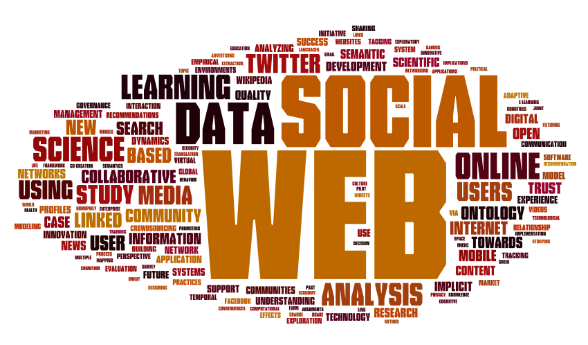
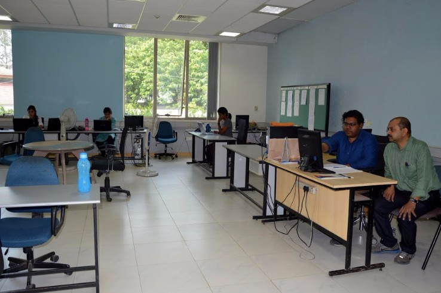

M.Tech in Information Technology
The M.Tech degree in Information Technology (IT) is intended to provide education for students who wish to work in the IT industry as practitioners. It is awarded upon successful completion of a 4-semester broad-based academic program in IT, going beyond, but incorporating essential elements of, traditional computer science.
Apart from imparting technical knowledge, the program teaches managerial and other cognate skills that are essential for a successful career in today's competitive IT industry. All students enrolled in the M.Tech program are residential, full-time students.
The M.Tech. program is a four semester program. The first three semesters of the program constitute academic course work. During the fourth semester, a student can either take up an industry internship or academic research at the institute leading to a thesis.
Computer Science
Starting from problem solving using computers, students of this stream learn concepts from a wide range of softwares.
- Theory Of Computation
- Artificial Intelligence
- Competitive Programming
- Distributed Computing
- Cryptography and Network Security
- Design and analysis of Safety Critical systems
- Mathematical Models of Computation
- Theoretical Computer Sciences
Data Science
This submajor provides theoretical foundations of computing, information science, data structures and algorithms. Engineering issues like database design, data mining, information systems design and a comprehensive understanding of large information systems.
- Data Modeling
- Data Analytics
- Multi Agent Systems
- Advanced Database Management Systems
- Web Information Retrieval
- Geographic Information Systems
- Foundations of Big Data
- Machine learning
- Algorithms for Massive datasets
Software Engineering
This stream has a two-fold mission:
Firstly, to educate the students to be high quality software engineers, with strong hands-on experience and with strong foundations in computer science concepts.
Secondly, to contribute original and ground breaking ideas to the state-of-the art in SE by actively involving in research.
- Design Patterns
- Usability
- Software testing
- Data Modeling
- Automated Formal Verification
- Geographic Information Systems
Networking and Communication
This stream covers a detailed understanding on various types of communication systems and protocols.
- Wireless Access Networks
- Wireless Sensor networks
- Internet Of Things
- Digital Image Processing
- Mobile computing with IMS Architecture
- Computer Vision
Web Sciences Lab
The Web Science Lab (WSL) at IIIT Bangalore focuses on building models to extract semantics and understand the impact of the web on different facets of human life.
Typical research pursuits of WSL include the following:
- Mining semantic associations from text and social media data
- Building computational models for various socio-cognitive phenomena on the web (like formation of collective opinions, creation of celebrities, etc.)
- Semantic integration of formal web data
Computational Sciences Lab

The Computational Sciences Lab at IIIT-B is interested broadly in the areas of Algorithms, Optimization, and Robotics.
Major focus areas include:
- Robust optimization under uncertainty, with applications to supply chains, real time search, banking, smart grid, transportation, gaming and allied areas
- Approximation algorims, machine learning, cryptography and linguistics, Visualization (scientific and information), high performance computing, computational geometry and topology
- Electronic Design Automation including Statistical timing analysis and Optimization for Digital circuits, Power Analysis and Optimization, Formal Verification, Semiconductor manufacturing, Statistical Optimization, Combinatorial Optimization, Design and Analysis of Alogrithms
HiDes Lab

The High Density Electronic Systems Lab at IIIT-B focuses on research and development in the area of high density and low dimensional electronics. The areas of research include 3D electronics, magnetic logic devices, interconnects, and antennas.
CEEMS Lab

The Center for Electronics and Embedded Systems (CEEMS) Lab's objective is to nurture talent by focusing on Embedded Computing, Wireless Communication and Computer Vision. CEEMS Lab collaborates with public and private organizations with the aim of bridging the gap between academic output and industry requirements, thus providing every learner an equal opportunity to become industry ready.
Multi Modal Perception Lab
The Multimodal Perception lab focuses on human-centered sensing and multimodal signal processing methods to observe, measure, and model human behavior. These methods are used in applications that facilitate behavioral training, and social media analysis; and enable human-robot interactions (HRI). The focus is mainly on vision and audio modalities. Probabilistic graphical models from the backbone of the underlying formalism.
Wireless Network Lab
This lab focuses on research involving networking standards and technology. Current research work concentrates upon the latest broadband wireless access technology – WiMAX/LTE. Major areas of work include medium access control (MAC), QoS, QoE, power management, media independent handover (MIH).